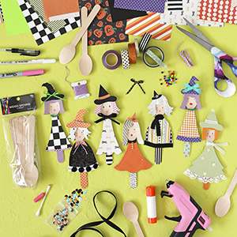

Wooden Spoon Witches
Every witch needs a trusty spoon for stirring up a little Halloween magic! With a few ordinary kitchen tools, colorful ribbons, scrapbook paper, and some creativity, kids can whip up their own adorable witchy friends in no time.

Draw the dress, witch’s hat, hair, and other shapes on the back of paper scraps, then cut them out and glue them onto the spoon, working from back to front (legs first, then dress, hair, and hat). Use a glue stick for larger pieces and hot glue for smaller areas. Decorate with bows, beads, buttons, and other embellishments, then draw on a face using a gel pen or paint pen to prevent the ink from bleeding into the wood. For rosy cheeks, gently rub pink chalk onto the wood with a cotton swab. Have fun and get creative!
Materials
- Disposable Wooden Spoons
- Assorted Scrapbook Paper
- Hot Glue Gun + Glue Sticks
- School Glue Stick or Glue Pen
- Paint Pens or Gel Pens
- Cotton Swab and Pink Chalk